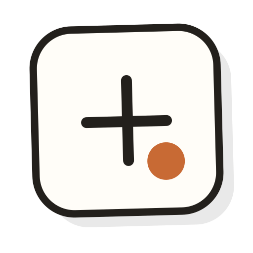

Action principale
Une décision visible.
Une seule action prioritaire par groupe. Un libellé concret, une forme stable et la couleur du thème et un texte contrasté.

Multi-ConverterSystème de design · Light & Dark Local par natureUne identité qui laisse travailler
Le bon format. Tout simplement.
Un convertisseur local. Deux ambiances. Une identité reconnaissable.
Fondations
L’orange porte le mode clair. Le vert porte le mode sombre. Les surfaces, ombres et proportions gardent la même personnalité.
#F0EFE9#FAF9F5#191919#CC785C#934631#2F6849#805614#9A3F35Action principale
Une seule action prioritaire par groupe. Un libellé concret, une forme stable et la couleur du thème et un texte contrasté.
Accent de sélection
L’accent indique le focus et la sélection. L’accent lisible porte les liens et les petits textes accentués.
Voir les règles de contrasteTypographie
Titres · Sans-serif dense
Moins d'effort.
Plus de possibilités.
Produit · Sans-serif
Chaque fichier garde ses réglages.
Vos originaux restent intacts.
Pile système sans-serif ; titres très gras, paragraphes calmes. Aucune fonte téléchargée par ce catalogue.
Rythme & formes
Rapprocher ce qui va ensemble. Aérer les décisions.
Des angles qui réunissent. Des ombres qui restent posées.
Composants
Exporter reste indisponible tant qu'aucun résultat n'est prêt. Les contrôles de ce catalogue sont des exemples.
Choisir une cible compatible avec le fichier source.
Équilibré : un compromis entre poids et fidélité.
Certaines métadonnées peuvent être perdues dans ce format. Votre fichier source restera intact.
Choisissez un autre dossier, puis réessayez l'export. Votre conversion reste disponible.
Parcours produit
Une démonstration interactive du langage produit. Les fichiers ci-dessous sont fictifs : aucun moteur de conversion ni OCR n'est exécuté.
Prêt à lancer une démonstration.
Les sources restent intactes, même après un échec ou une annulation.
Un avertissement nomme la perte possible et laisse décider.
Un lot partiel garde ses réussites et propose la bonne nouvelle tentative.
Accessibilité